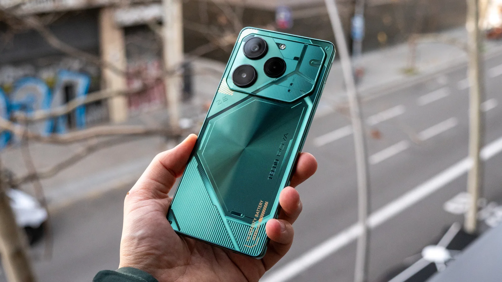
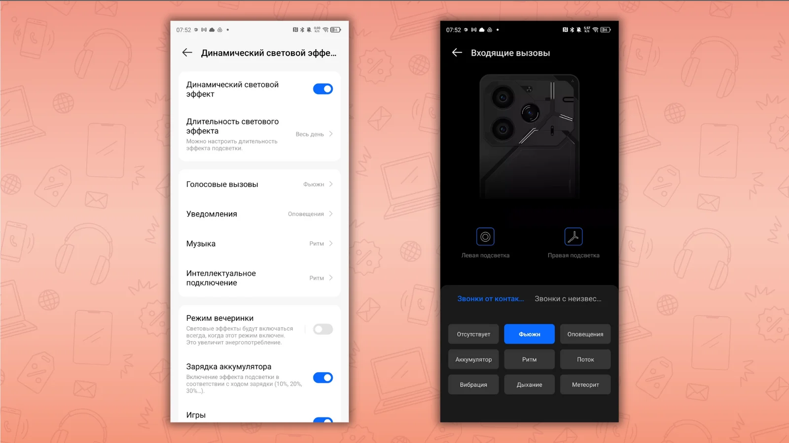
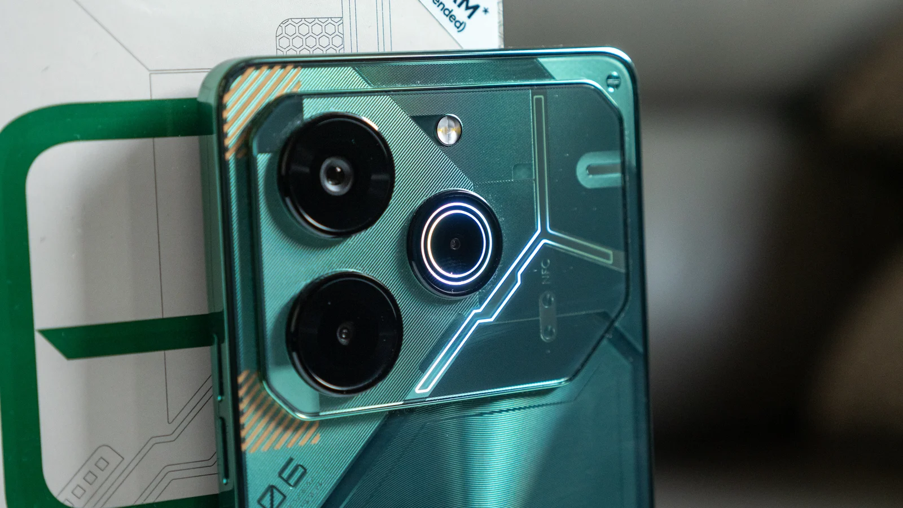
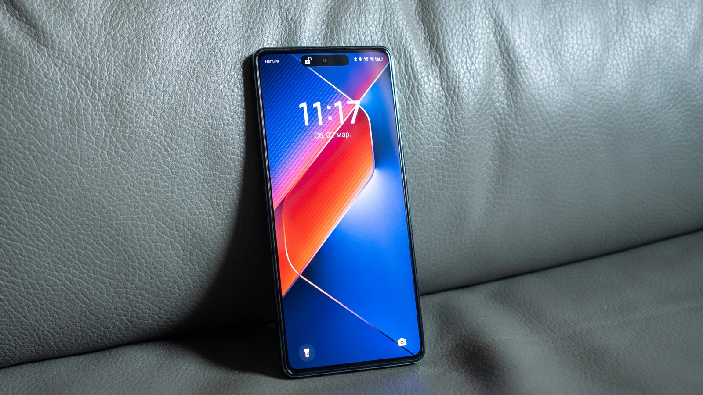
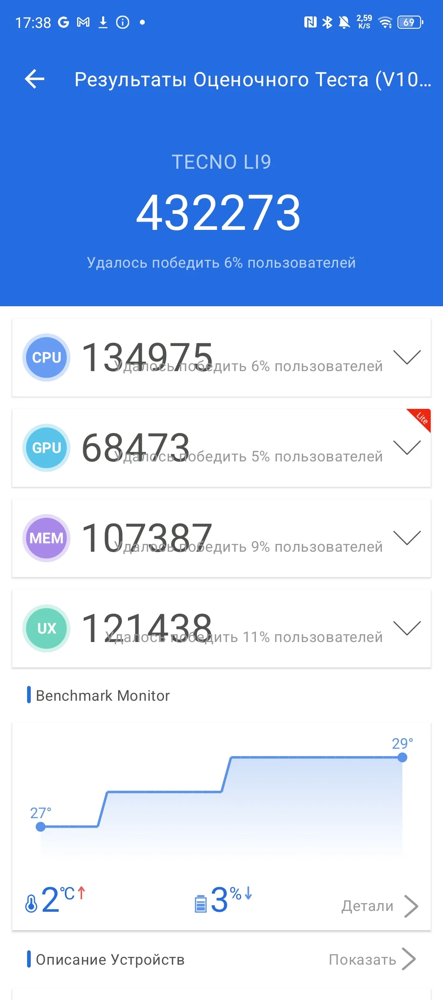
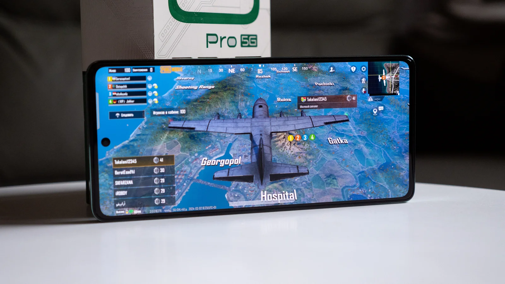
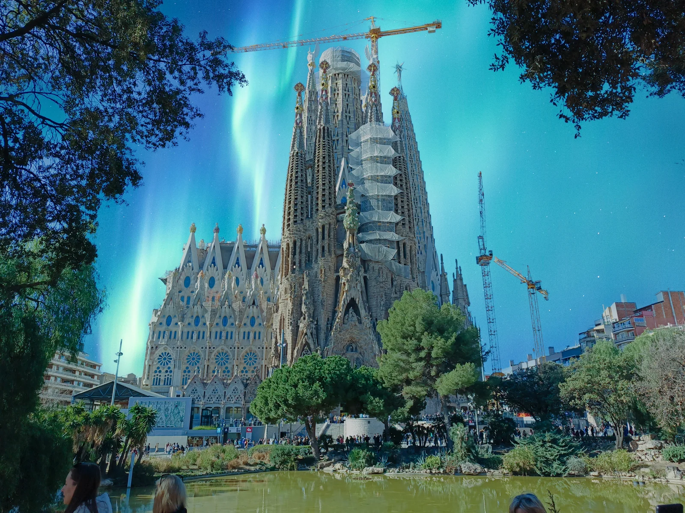

TECNO POVA 6 Pro: киберпанк-смартфон с батареей 6000 мАч
Цены на TECNO POVA 6 Pro в 2024 году
- TECNO POVA 6 Pro 8/256 ГБ — 23 999 рублей;
- TECNO POVA 6 Pro 12/256 ГБ — 25 999 рублей.
Характеристики TECNO POVA 6 Pro
Основные характеристики TECNO POVA 6 Pro:
- Дисплей: AMOLED, 6,8 дюйма, 2436 x 1080 (Full HD+), частота 120 Гц, яркость 1300 нит
- Процессор: MediaTek Dimensity 6080 (6 нм)
- Память: 8 либо 12 ГБ ОЗУ, 256 ГБ ПЗУ
- Основная камера: основной модуль 108 Мп f/1,9, сенсор глубины 2 Мп, датчик света 0,08 Мп
- Фронтальная камера: 32 Мп f/2,2
- Батарея: 6000 мАч, быстрая проводная зарядка 70 Вт, обратная проводная зарядка 10 Вт
- Связь: 5G, LTE, Bluetooth 5.3 LE, NFC, USB-C USB 2.0
- ОС: HiOS 14 на базе Android 14
- Корпус: 165,5 x 76,1 x 7,9 мм, вес 198 г, влагозащита IP53, подсветка на задней панели
Дизайн
Линейка TECNO POVA с самого старта отличалась выразительным дизайном. Смартфон нацелен на молодую аудиторию, которая в том числе увлекается играми. Отсюда такой стиль киберпанк, он же мех-дизайн — по аналогии с боевыми машинами, например, из игры Titanfall: платы, «трубки», индустриальный шрифт.
В продаже появятся две расцветки: зеленая и темно-серая. Обе выглядят классно, но на зеленой видно меньше отпечатков пальцев. А еще TECNO POVA 6 Pro похож на Nothing Phone (1). Не только рисунком: в верхней части располагается подсветка из 210 независимых диодов.
Вот несколько сценариев, когда верхняя часть смартфона светится:
- голосовые вызовы;
- уведомления;
- в такт музыке;
- при подключении по Bluetooth, NFC, через ИК-датчик;
- на зарядке (линии «заполняются» по мере зарядки до 100%);
- съемка фото — подсветка имитирует обратный отсчет;
- световые эффекты в игре PUBG и другие.
Первые четыре сценария можно настроить. Выбрать эффекты пульсации подсветки, можно отдельно подсвечивать левую и правую часть смартфона. Цвет только один — белый. Подсветка полезная, когда смартфон лежит экраном вниз, и так вы узнаете о звонках и уведомлениях. Обратный отсчет — тоже полезная вещь. Можно включить режим вечеринки — будет мигать постоянно.
Грани TECNO POVA 6 Pro плоские — как на iPhone 15 Pro Max, но за счет закруглений удобно держать в руках. Корпус целиком пластиковый, поэтому будет легко царапаться без чехла (идет в комплекте). Зато для такой внушительной диагонали и батареи — легкий: 198 г.
Да и втиснутая в корпус тоньше 8 мм батарея 6000 мАч тоже вызывает восхищение. Однако высота и ширина напоминают: перед нами гигант для больших рук. Спасибо за плоское стекло: нет ложных касаний. До всех кнопок дотянуться легко.
Несмотря на бюджетный класс, TECNO POVA 6 Pro оказался очень практичным:
- влагозащита IP53 — выдержит дождь и брызги;
- аудиоразъем — можно подключить беспроводные наушники;
- стереодинамики — объемный звук в играх и при просмотре видео. Кстати, это первый смартфон TECNO с поддержкой Dolby Atmos. Работает, например, в игре PUBG;
- тройной лоток под SIM и карты памяти — не придется чем-то жертвовать;
- ИК-порт — можно управлять бытовой техникой вместо пульта.
Все признаки идеального бюджетного смартфона на месте. Так еще и комплект у смартфона — богатый. Есть и запасная пленка на дисплей, и чехол, и зарядку не отобрали. А гарантийный срок у TECNO не 12, а 13 месяцев. Мелочь, а приятно.
Дисплей
TECNO POVA 6 Pro получил почти безрамочный 6,8-дюймовый AMOLED дисплей с высокой частотой обновления 120 Гц. В вырез встроена фронтальная камера, и как на iPhone 15 Pro, вырез динамически «расширяется». Например, при разблокировке по лицу. Есть режим Always-on Display, когда на заблокированном экране отображаются часы и значки уведомлений.
За такую цену к матрице TECNO POVA 6 Pro вопросов нет. Цвета насыщенные, но без ядерных оттенков: заявлен охват цветового диапазона DCI-P3 на 100%. Заявленная же яркость 1300 нит пусть и едва достижима в реальных условиях, но под солнцем изображение остается хорошо читаемым — это главное. Фотографии на экране смотрятся сочно, интерфейс работает плавно на частоте 120 Гц.
Производительность
TECNO POVA 6 Pro работает на процессоре средне-базового уровня MediaTek Dimensity 6080. По сути это реинкарнация «бывалого» MediaTek Helio G99 со слегка разогнанными вычислительными ядрами. В тесте AnTuTu смартфон выдает около 430 тыс. баллов. Флагманы 2024 года — более 2 млн баллов.
Однако TECNO неплохо поработала с оптимизацией системы, с памятью и охлаждением POVA 6 Pro. Например, вам доступно минимум 8 ГБ, а то и 12 ГБ оперативной памяти. Технология динамической памяти добавляет еще до 12 ГБ, но они работают как временное хранилище, не ускоряя работу смартфона.
Оболочка HiOS 14 работает шустро, изредка притормаживая только при запуске программ. Постоянной памяти 256 ГБ во всех версиях — отличная мотивация взять POVA 6 Pro на годы вперед. Есть NFC для бесконтактной оплаты, даже FM-радио: работает с проводными наушниками.
В играх смартфон ведет себя достойной. Например, CoD Mobile отлично пошла на высоких настройках, PUBG Mobile лучше переключить на «Баланс». Игры выдают 30−60 FPS, а Mobile Legends: Bang Bang и Free Fire — до 90 Гц, эти два тайтла оптимизированы под TECNO POVA 6 Pro. Смартфон при этом не перегревается.
Можно смело брать для себя или ребенка под гейминг без претензии на максимальные настройки графики.
Батарея
Много внимания TECNO уделила аккумулятору. Начиная с емкости: 6000 мАч — внушительный жест конкурентам, у которых обычно 5000 мАч. Смартфон спокойно работает 2 дня от одного заряда, в розетку просится к вечеру второго дня. В монотесте его хватило на 17 часов воспроизведения видео при яркости 100% и 10 часов игр.
Большая емкость — лишь верхушка айсберга. Например, можно вручную выбрать режим зарядки:
- низкотемпературный — для продления жизни батареи;
- умный — для «умной» зарядки;
- сверхбыстрый — быстрая зарядка, не обращая внимание на нагрев корпуса.
Адаптер рассчитан на мощность 70 Вт и позволяет зарядить смартфона с нуля до 50% за 20 минут, до 100% — за 50 минут. Здесь несколько степеней защиты: помимо защиты от скачков напряжения, вы получите уведомление, если в порт USB попала влага. А зарядка аккумулятора допустима при температуре −20 °С. Сейчас весной не так актуально, но, как говорится, готовь сани с лета.
Также TECNO POVA 6 Pro умеет заряжать другие гаджеты по проводу. Мощность отдачи — до 10 Вт. Пригодится, чтобы «прикурить» наушники или смартфон друга.
Камера
Пусть вас не вводит в заблуждения тройная камера TECNO POVA 6 Pro: снимает только одна. Да и разрешение 108 Мп не означает, что смартфон будет фотографировать как условный Samsung Galaxy S22 Ultra. Бюджетный сегмент — поэтому оптика и сенсор тут заметно проще, чем по флагманах.
При хорошем освещении камера TECNO POVA 6 Pro вызывает положительные эмоции. Динамический диапазон мог быть шире, но HDR хорошо выручает при съемке против солнца и в контрастных сценах.
Большое количество пикселей позволяет задействовать цифровой зум почти без потери качества при двукратном увеличении. Далее качество падает, но даже 5-кратный зум дает разглядеть детали.
Ультраширокоугольной камеры не хватает, и это главная претензия к TECNO POVA 6 Pro: конкуренты в сегменте 20−25 тыс. рублей ультраширик имеют. Пусть и слабенький, но все же. Здесь вам приходится отходить ногами назад, чтобы в кадр влез высокий памятник.
2-мегапиксельный сенсор глубины помогает правильно отделить и размыть задний фон при съемке портретов. Справляется успешно: я снимал портреты и без зума, и на зуме 3х — качество размытия понравилось во всех случаях.
В приложении Камера есть необычный режим — «Небесная съемка». Вы снимаете любой объект, а вместо неба алгоритмы на основе нейросетей подставляют искусственную красоту — от Луны и Млечного пути до северного сияния и радуги.
В процессе съемки не покидало ощущение, что смартфон хочет сделать снимок ярче, чем он на самом деле. Из-за этого в тени или ночью удлиняется выдержка — а значит, проще получить смазанный кадр. Снять вертлявых животных проблематично, они получаются размытыми.
Поэтому лучше снимать статичные кадры, крепко удерживая смартфон в руках. Дополнительно можно слегка уменьшить экспозицию, тогда и выдержка будет меньше, и кадр не будет пересвеченным.
Максимальное качество видео — 2К 30 кадр/с либо 1080p 60 кадр/с. Электронная стабилизация при этом не работает, картинка в движении трясется. Если вы готовы с этим мириться, то получите неплохое качество картинки. Особенно при хорошем освещении.
У TECNO POVA 6 Pro есть режим съемки двойного видео: смартфон снимает на основную и фронтальную камеры. Пригодится, чтобы поделиться эмоциями от увиденного. При этом во время съемки можно менять масштаб двух окон: сделать акцент на себе или на объекте съемке. Стабилизация также отсутствует, так что лучше снимать со штатива.
А вот фронталки в бюджетных «китайцах» чаще радуют больше, чем в основные модули. Тут и динамический диапазон хороший, и детализация. Есть подсветка экраном при съемке в темноте — в общем, без классных селфи не останетесь.
Стоит ли покупать TECNO POVA 6 Pro?
У TECNO POVA 6 Pro есть все шансы на успех в России. Смартфон выделяют огромная батарея и необычный дизайн с подсветкой. Она тут не понтов ради, а несет пользу, пусть и в редких сценариях. Также новинку выделяют качественный экран с частотой 120 Гц и охватом DCI-P3 и неплохая производительность в серьезных играх.
Главные конкуренты TECNO POVA 6 Pro на российском рынке — Honor X9b и Redmi Note 13 Pro:
- Honor X9b — не боится ударов, у него защищенный со всех сторон дисплей. Есть ультраширик, пусть и простенький. Ночной режим хорошо прокачан алгоритмами. Батарея — тоже нехилые 5800 мАч. А процессор Snapdragon лучше оптимизирован для игр.
- Redmi Note 13 Pro — батарея «всего» 5000 мАч, а камера пусть и предлагает 200 мАч, но снимает на уровне конкурентов. Однако на стороне Redmi мощный бренд и удобная оболочка MIUI, которую скоро заменит еще более быстрая и продуманная HyperOS.
На мой взгляд, фишка TECNO POVA 6 Pro даже не в батарее или в подсветке, а в его практичности. Здесь богатая комплектация с качественным чехлом и пленкой. Плюс один месяц гарантии к стандартным 12 месяцам. Тройной лоток под SIM и карты памяти, мощный стереозвук и даже аудиоразъем. Эти элементы важнее в бюджетном классе, чем навороченная камера.